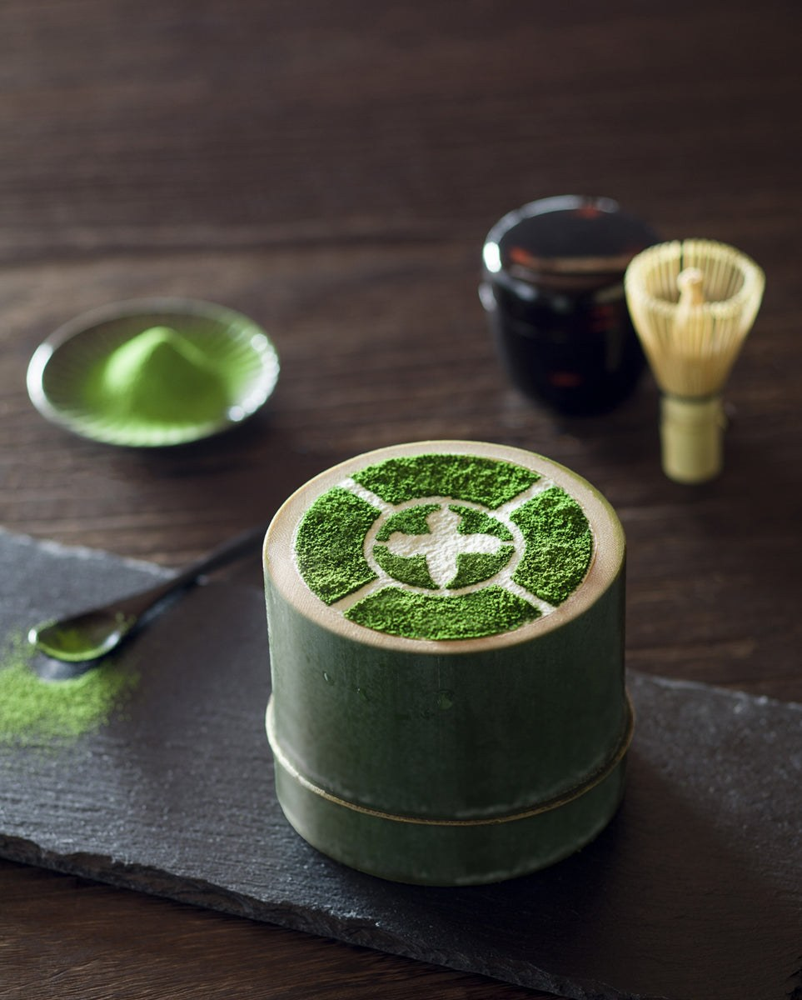
| 営業時間 | 銘茶売場 10:00〜17:30／カフェ 10:00〜17:30（L.O.16:30、受付16:00まで） |
|---|---|
| 定休日 | 要確認（不定休） |
| 住所 | 京都府宇治市宇治壱番十番地 |
| 予約 | 不可 — ☎ 0774-22-7800 ／ 公式サイト |
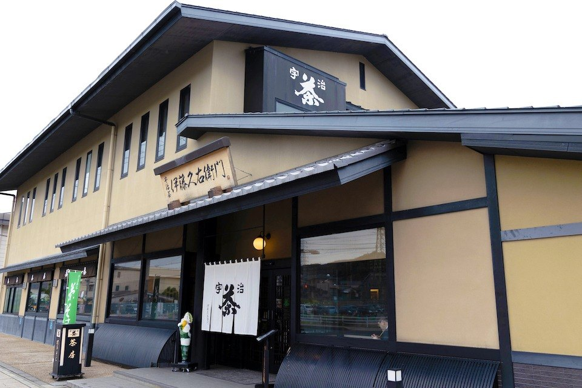
| 営業時間 | 10:00〜18:00（茶房 L.O.17:30） |
|---|---|
| 定休日 | 1月1日・1月2日、ほか不定休 |
| 住所 | 京都府宇治市莵道荒槇19-3 |
| 予約 | 不可 — ☎ 0774-23-3955 ／ 公式サイト |
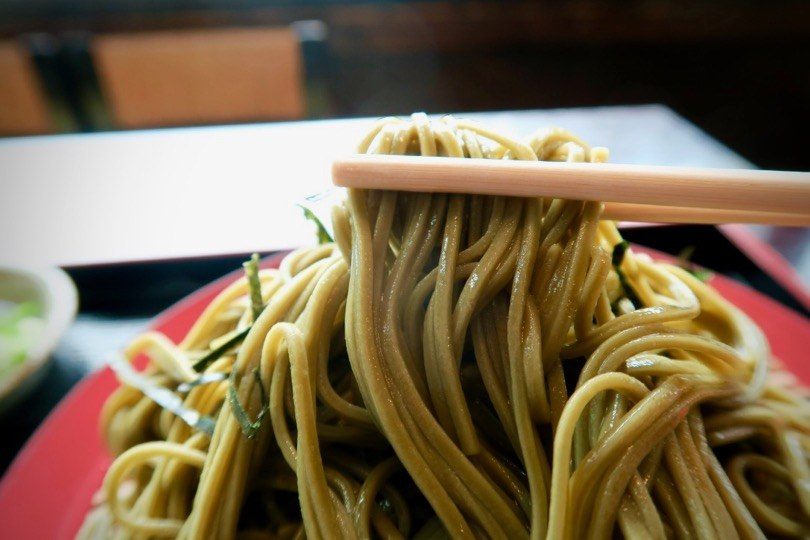
| 営業時間 | 10:30〜17:30（L.O.16:00） |
|---|---|
| 定休日 | 年中無休 |
| 住所 | 京都府宇治市宇治東内1番地 |
| 予約 | 不可 — ☎ 0774-21-2243 ／ 公式サイト |
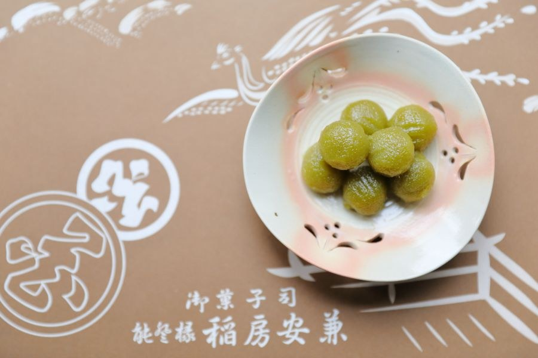
| 営業時間 | 9:00〜17:00 |
|---|---|
| 定休日 | 木曜、第3水曜（祝日の場合は翌日） |
| 住所 | 京都府宇治市宇治蓮華11 |
| 予約 | 不要 — ☎ 0774-21-2074 ／ 公式サイト |
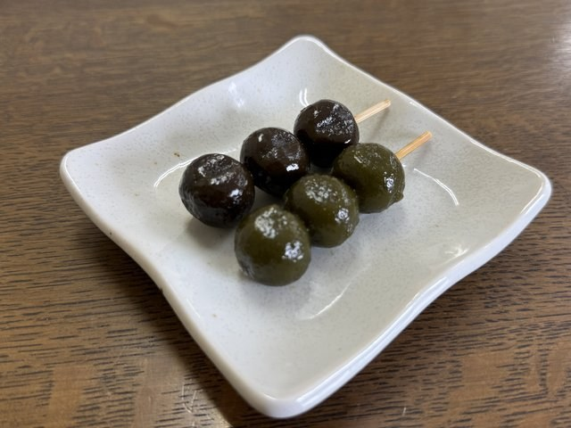
| 営業時間 | 8:00〜17:00 |
|---|---|
| 定休日 | 無休 |
| 住所 | 京都府宇治市宇治妙楽180-4 |
| 予約 | 不要 — ☎ 0774-22-8328 |
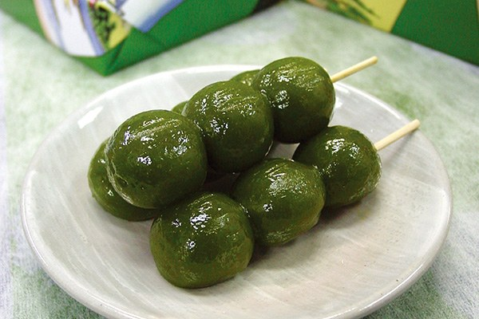
| 営業時間 | 9:30〜18:00 |
|---|---|
| 定休日 | 不定休（公式サイトに月ごとの定休日を掲載） |
| 住所 | 京都府宇治市宇治東内16 |
| 予約 | 不要 — ☎ 0774-23-8191 ／ 公式サイト |
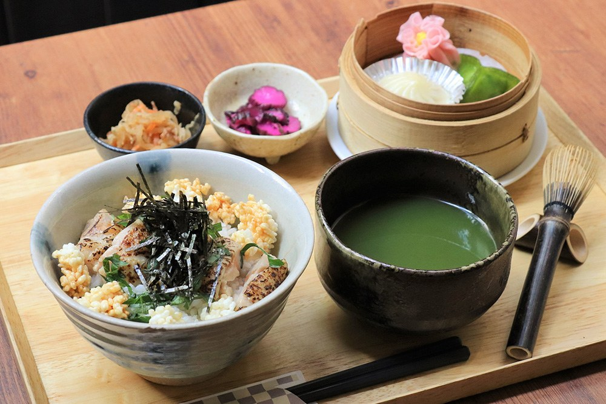
| 営業時間 | 11:00〜15:30（L.O.15:00）／夜は予約のみ |
|---|---|
| 定休日 | 月曜（祝日の場合は火曜） |
| 住所 | 京都府宇治市宇治蓮華12 |
| 予約 | 可 — ☎ 0774-23-8388 ／ 公式サイト |
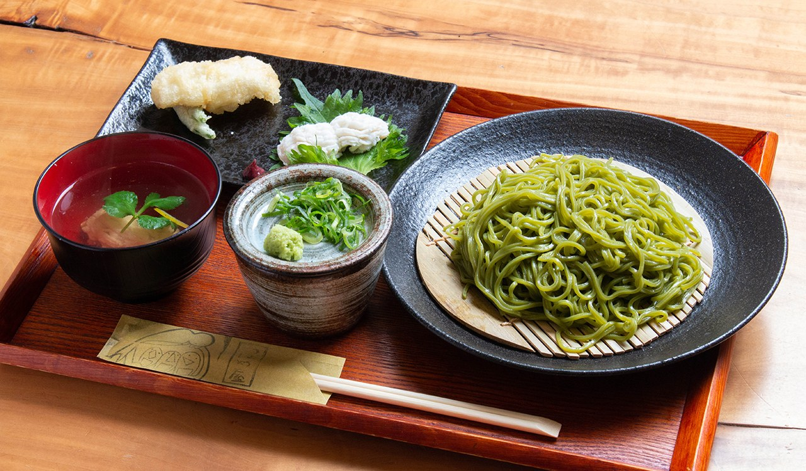
| 営業時間 | 11:15〜17:00（L.O.16:00） |
|---|---|
| 定休日 | 年中無休（別掲では不定休の表記あり・要確認） |
| 住所 | 京都府宇治市宇治東内13-3 |
| 予約 | 可 — ☎ 0774-21-9111 ／ 公式サイト |
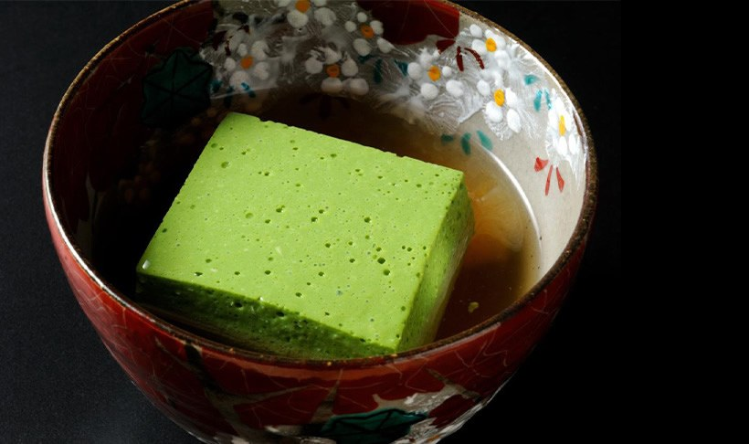
| 営業時間 | 昼 11:00〜15:30（L.O.14:30）／夜 17:00〜22:00（L.O.19:30、要予約） |
|---|---|
| 定休日 | 不定休（正月、2月・7月・9月に連休あり） |
| 住所 | 京都府宇治市宇治塔川3-7 |
| 予約 | 推奨 — ☎ 0774-21-3131 ／ 公式サイト |
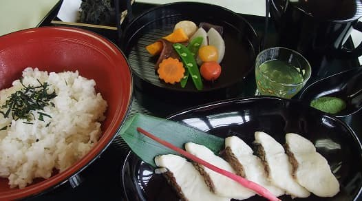
| 営業時間 | 宇治茶工房 10:00〜17:00／玉露亭 11:00〜17:00（L.O.16:30）／宇治茶亭 11:30〜16:00 |
|---|---|
| 定休日 | 不定休（従来は月曜休・祝日の場合は翌日／要確認） |
| 住所 | 京都府宇治市宇治山田10（宇治茶亭は宇治塔川1-1） |
| 予約 | 推奨 — ☎ 050-3152-2930 ／ 公式サイト |
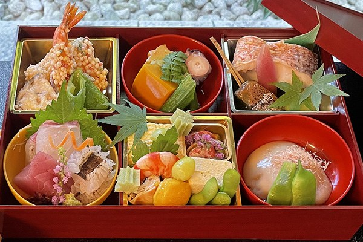
| 営業時間 | 昼11:30〜14:00（L.O.）／夕16:30〜19:00（L.O.、閉店22:00） |
|---|---|
| 定休日 | 水曜（ほか月2回程度の不定休） |
| 住所 | 京都府宇治市宇治蓮華21（平等院北門前） |
| 予約 | 要 — ☎ 0774-21-7039 ／ 公式サイト |
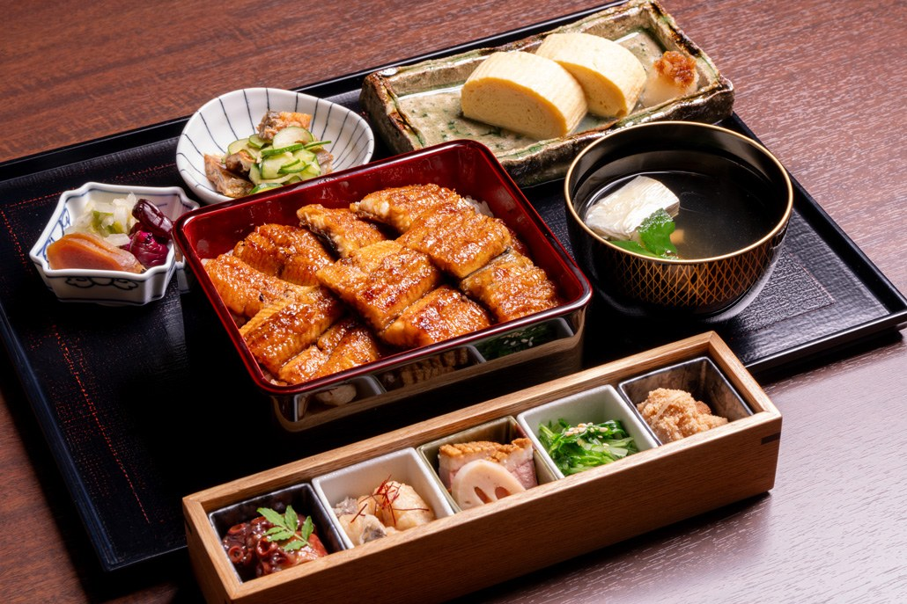
| 営業時間 | 11:00〜15:30（L.O.14:00） |
|---|---|
| 定休日 | 水曜・第2第4火曜 |
| 住所 | 京都府宇治市宇治妙楽178-13 宇治第一ホテル1F |
| 予約 | 推奨 — ☎ 0774-25-8989 ／ 公式サイト |
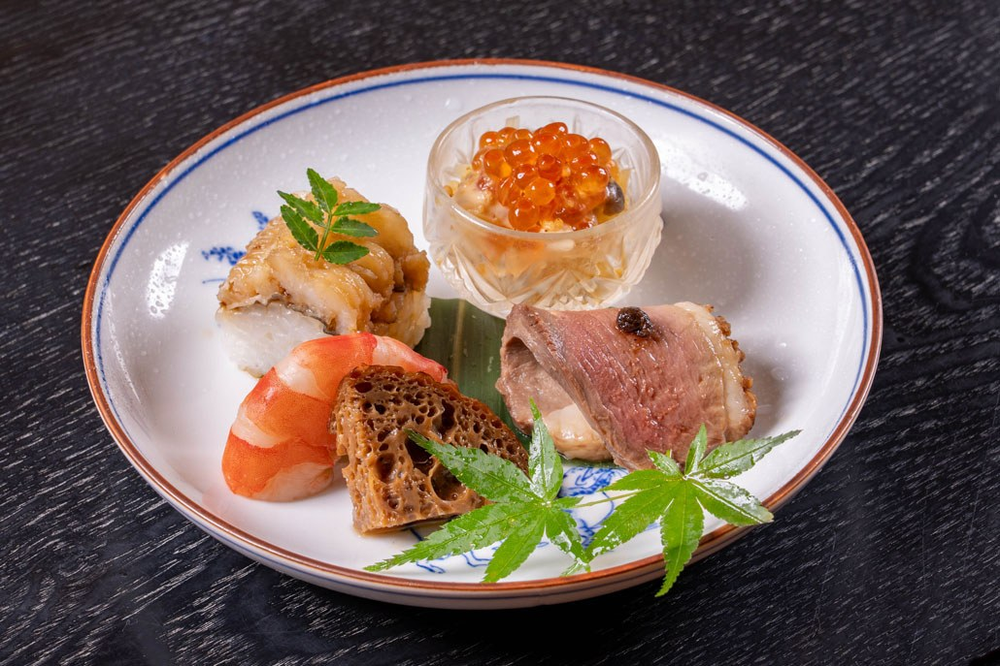
| 営業時間 | 11:30〜14:00（L.O.13:30）／17:30〜22:00（L.O.21:30） |
|---|---|
| 定休日 | 日曜・月曜（ほか不定休あり） |
| 住所 | 京都府宇治市宇治妙楽32「中宇治yorin」西棟1階 |
| 予約 | 要 — ☎ 0774-24-5030 |
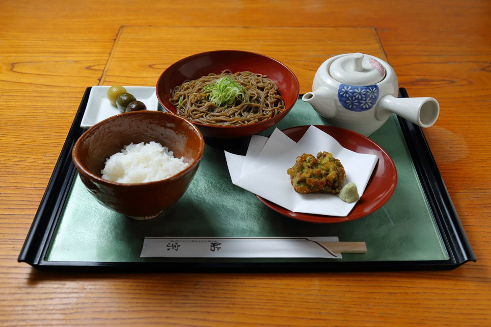
| 営業時間 | 11:00〜17:00（座敷席の利用および17時以降の食事は要予約） |
|---|---|
| 定休日 | 不定休 |
| 住所 | 京都府宇治市宇治塔川3-4 |
| 予約 | 推奨 — ☎ 0774-22-3001 ／ 公式サイト |
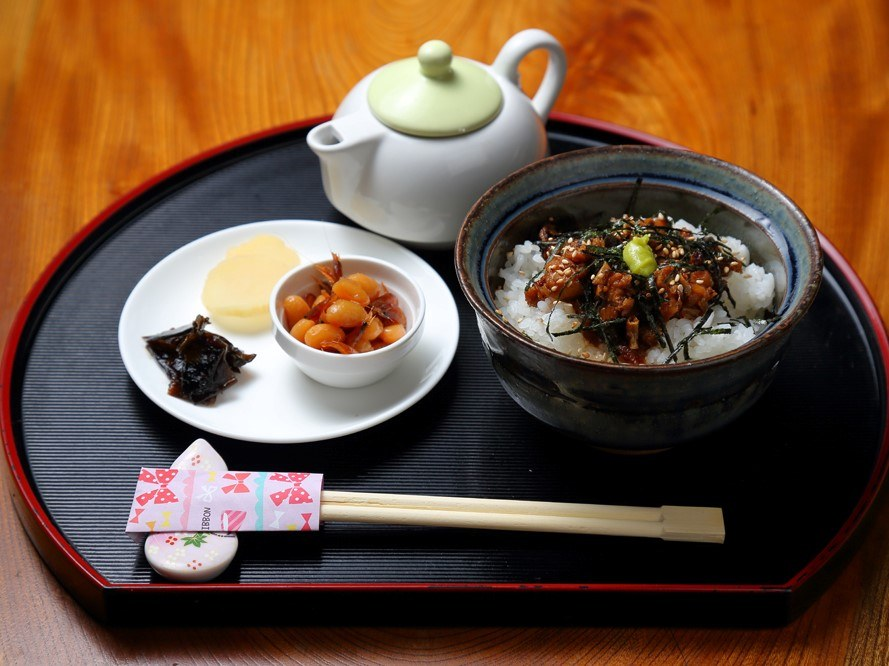
| 営業時間 | 10:00〜18:00（短縮営業中との告知あり） |
|---|---|
| 定休日 | 月曜 |
| 住所 | 京都府宇治市六地蔵町並40 |
| 予約 | 推奨 — ☎ 0774-32-0602 ／ 公式サイト |
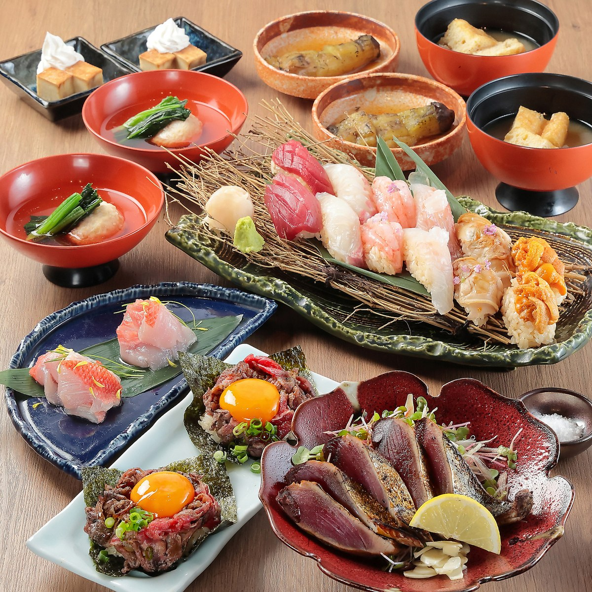
| 営業時間 | 月・火・木〜土 11:00〜15:00（L.O.14:30）／17:00〜21:00（L.O.20:30）、日 11:00〜17:00（L.O.16:30） |
|---|---|
| 定休日 | 水曜 |
| 住所 | 京都府宇治市宇治妙楽24-11 1階 |
| 予約 | 推奨 — ☎ 0774-39-5510 ／ 公式サイト |
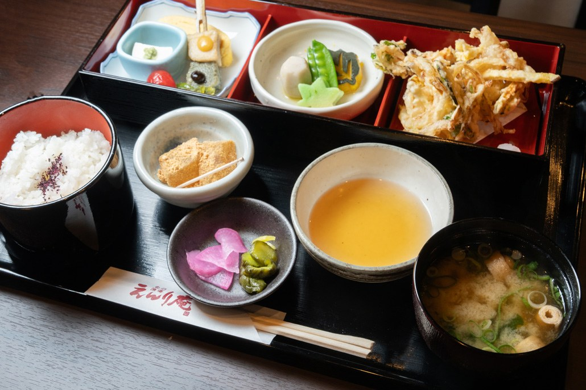
| 営業時間 | 月・水・木・日・祝 11:30〜15:00（L.O.14:00）／17:00〜23:00（L.O.22:00）、金・土・祝前日は17:00〜翌0:00 |
|---|---|
| 定休日 | 火曜 |
| 住所 | 京都府宇治市六地蔵奈良町6-4 ヴィラノール1階 |
| 予約 | 推奨 — ☎ 0774-34-1835 ／ 公式サイト |
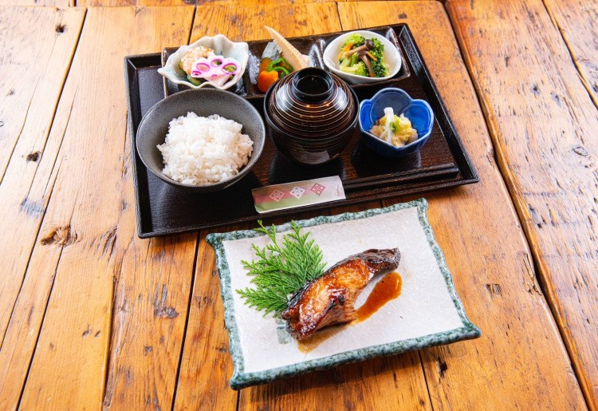
| 営業時間 | 昼11:30〜18:30／夜19:00〜21:30（要予約）、持ち帰りは10:30〜19:00 |
|---|---|
| 定休日 | 日曜 |
| 住所 | 京都府宇治市小倉町西浦78-3 OGURA STATION PARK 1F |
| 予約 | 可（夜は要予約） — ☎ 0774-23-8546 ／ 公式サイト |
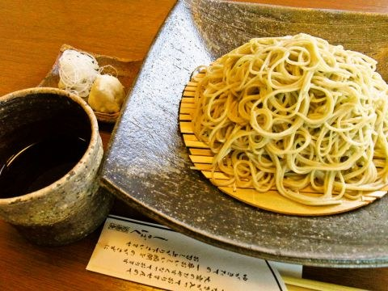
| 営業時間 | 11:30〜15:00（昼のみ） |
|---|---|
| 定休日 | 月曜（祝日の場合は翌火曜） |
| 住所 | 京都府宇治市宇治東内13-1 |
| 予約 | 不可 — ☎ 0774-22-5470 |
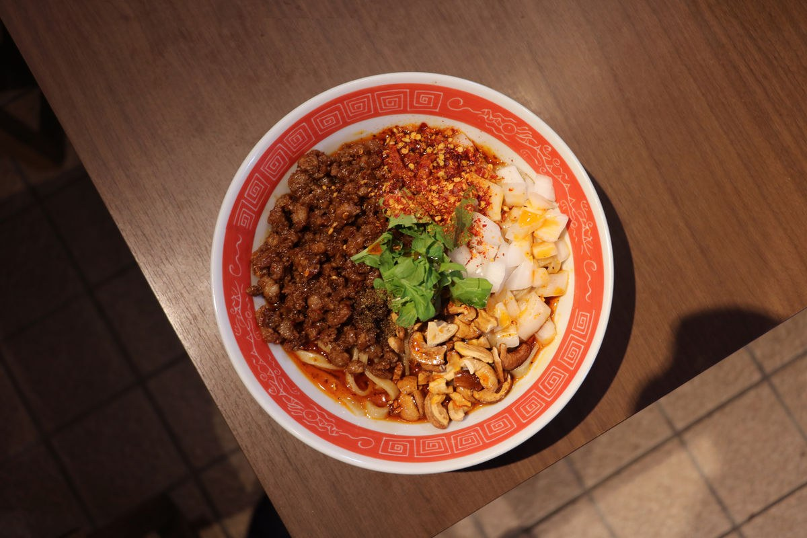
| 営業時間 | 11:00〜14:30（ラストオーダー） |
|---|---|
| 定休日 | 金・土・日（臨時営業・休業あり） |
| 住所 | 京都府宇治市宇治池森20-1 |
| 予約 | 推奨 — ☎ 070-5262-3677 ／ 公式サイト |
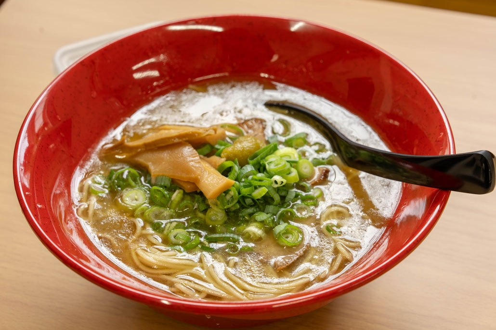
| 営業時間 | 11:30〜14:30（L.O.14:00）／17:00〜20:30 |
|---|---|
| 定休日 | 不定休 |
| 住所 | 京都府宇治市木幡熊小路43-33 |
| 予約 | 不可 |
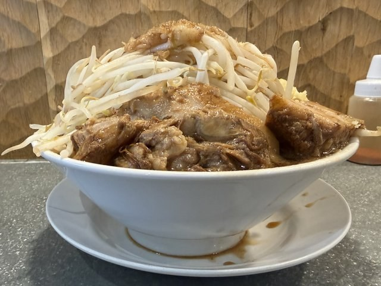
| 営業時間 | 11:00〜15:00／17:00〜21:00（各ラストオーダー30分前） |
|---|---|
| 定休日 | 不定休 |
| 住所 | 京都府宇治市広野町西裏66-1 |
| 予約 | 不可 — ☎ 0774-39-8180 |
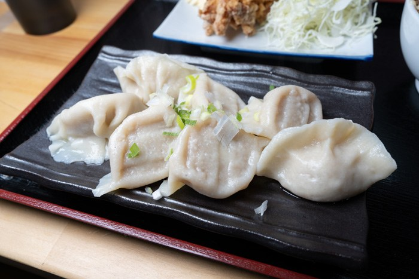
| 営業時間 | 10:30〜14:30／17:00〜21:00（時期により10:30〜20:00の通し営業） |
|---|---|
| 定休日 | 土曜・日曜 |
| 住所 | 京都府宇治市宇治池森20-6 |
| 予約 | 可 |
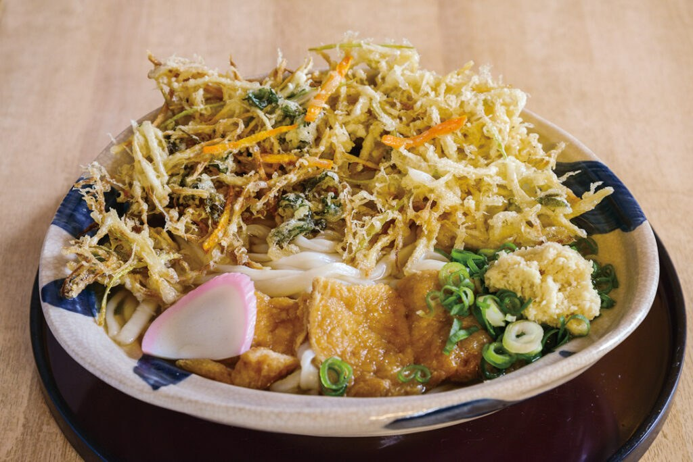
| 営業時間 | 11:00〜17:00（木曜は15:00まで／うどんはL.O.13:30頃、以降は菓子販売） |
|---|---|
| 定休日 | 水曜（ほか不定休） |
| 住所 | 京都府宇治市宇治蛇塚76-3 |
| 予約 | 不可 — ☎ 0774-23-4909 ／ 公式サイト |
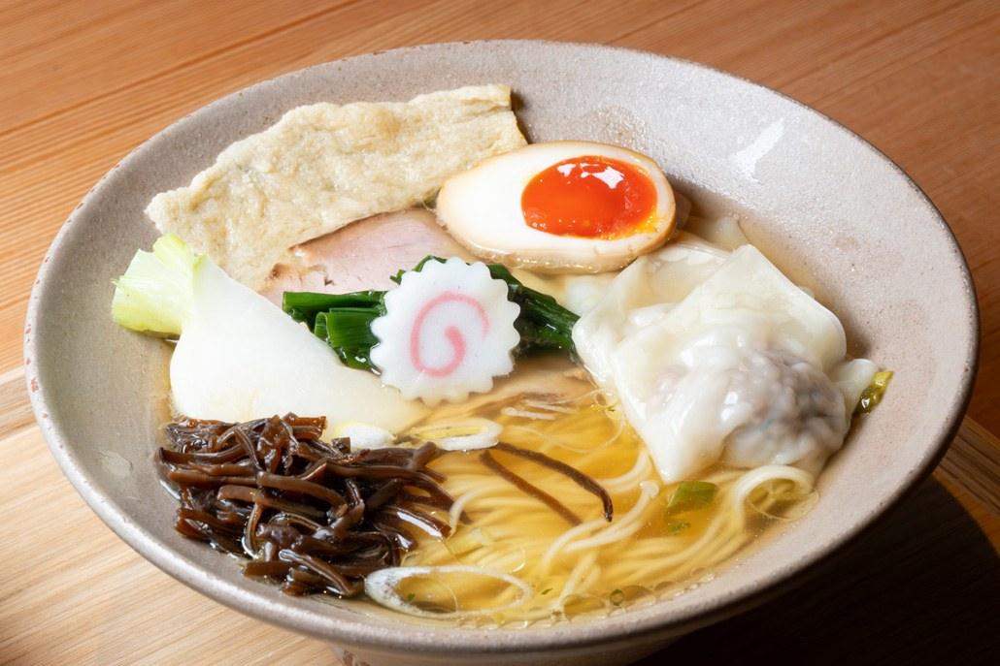
| 営業時間 | 11:00〜18:00 |
|---|---|
| 定休日 | 不定休 |
| 住所 | 京都府宇治市宇治妙楽160-6 |
| 予約 | 不可 — ☎ 0774-34-4992 ／ 公式サイト |
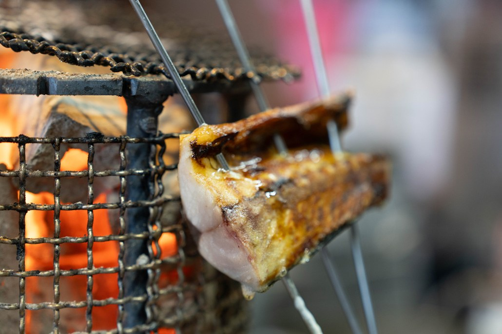
| 営業時間 | 11:00〜22:00（L.O.21:30、ランチは11:00〜14:00） |
|---|---|
| 定休日 | 月曜 |
| 住所 | 京都府宇治市小倉町西浦82-27 |
| 予約 | 可 — ☎ 080-6113-9784 |
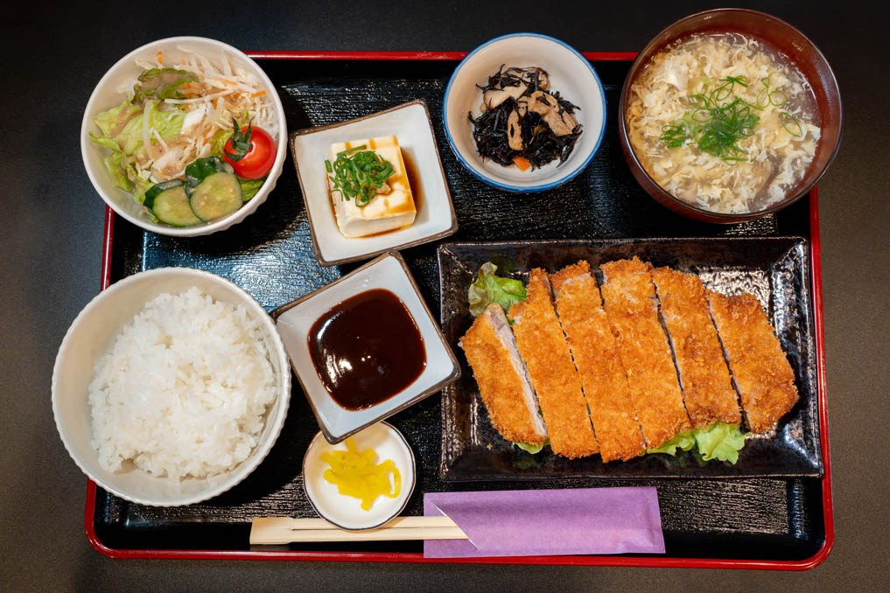
| 営業時間 | 11:00〜15:00／18:30〜21:00（日曜は11:00〜15:00のみ。開店当初は11:00〜23:00の通し営業だった） |
|---|---|
| 定休日 | 水曜・不定休 |
| 住所 | 京都府宇治市宇治壱番29-1 |
| 予約 | 可 — ☎ 0774-79-3400 ／ 公式サイト |
| 営業時間 | 18:00〜23:00（料理L.O.22:00、ドリンクL.O.22:30） |
|---|---|
| 定休日 | 火曜・水曜、ほか不定休 |
| 住所 | 京都府宇治市大久保町井ノ尻21-13 |
| 予約 | 可 — ☎ 070-8568-8616 ／ 公式サイト |
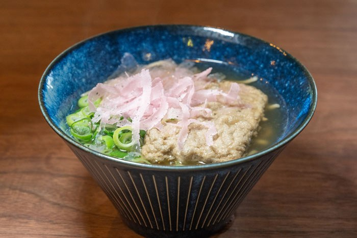
| 営業時間 | 月〜水・金 11:00〜21:00／土日祝 9:00〜21:00 |
|---|---|
| 定休日 | 木曜 |
| 住所 | 京都府宇治市宇治妙楽41 大阪屋マーケット内 |
| 予約 | 不要 — ☎ 080-9120-5079 ／ 公式サイト |
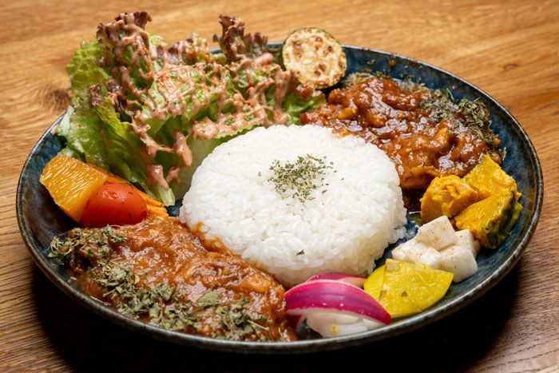
| 営業時間 | 月〜水 11:00〜14:00／16:00〜21:30、金 16:00〜21:30、土日 11:00〜21:30 |
|---|---|
| 定休日 | 木曜 |
| 住所 | 京都府宇治市宇治妙楽21-1（中宇治BASE 1階） |
| 予約 | 不要 |
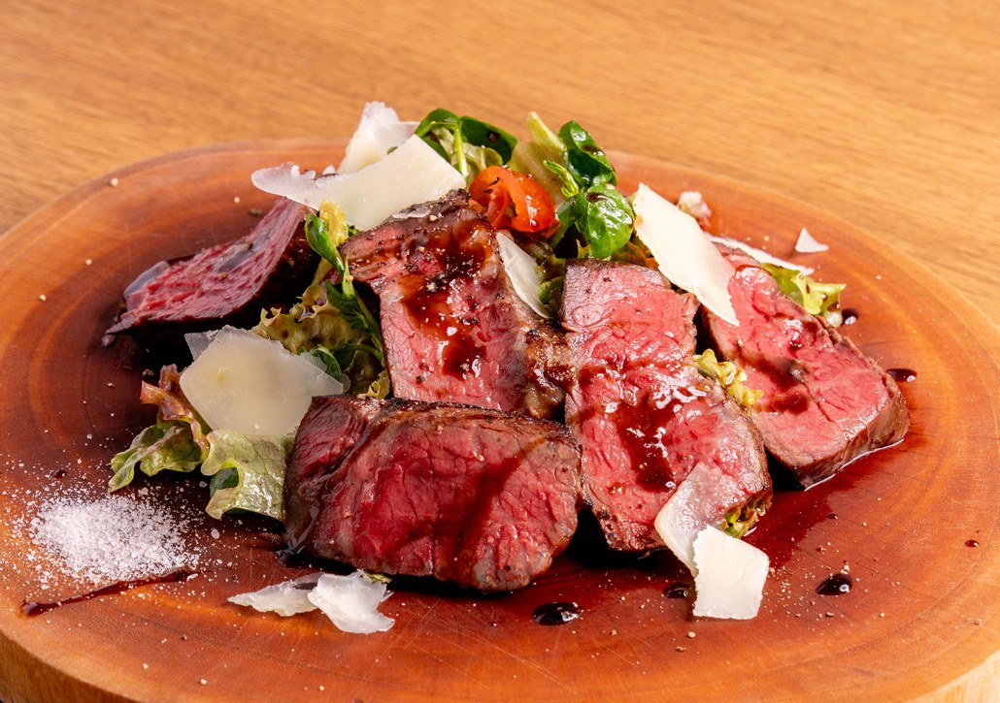
| 営業時間 | 11:30〜14:30（L.O.13:30）／18:00〜21:30（L.O.20:30） |
|---|---|
| 定休日 | 水曜 |
| 住所 | 京都府宇治市莵道車田1 |
| 予約 | 推奨 — ☎ 0774-39-7476 |
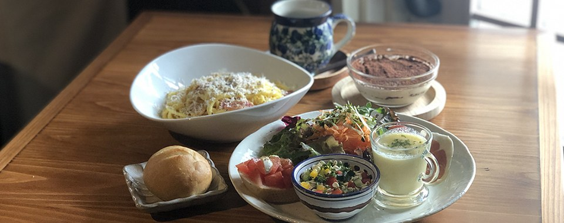
| 営業時間 | 11:30〜15:00（L.O.14:00）／18:00〜22:00（L.O.21:00・4名以上の予約制） |
|---|---|
| 定休日 | 土曜・日曜・祝日（ほか不定休） |
| 住所 | 京都府宇治市五ケ庄西浦14-19 |
| 予約 | 推奨 — ☎ 0774-66-5140 ／ 公式サイト |
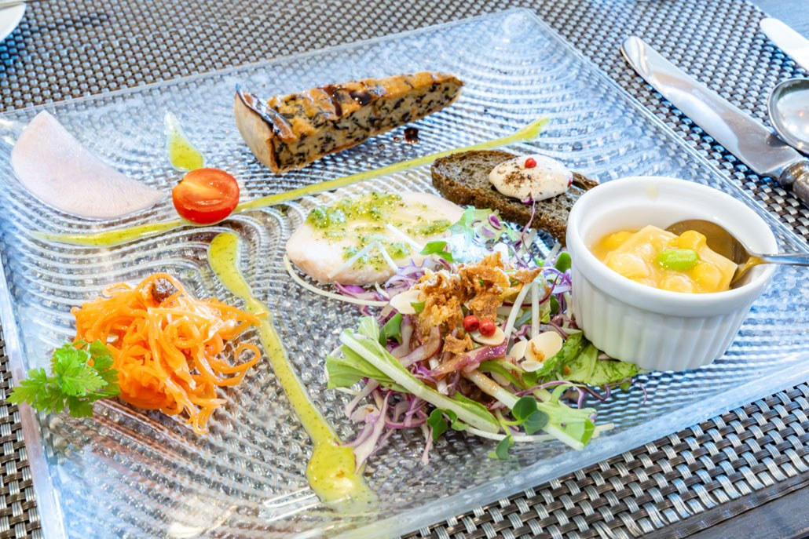
| 営業時間 | 11:30〜15:00（L.O.14:40）／17:30〜22:00（L.O.21:00・夜は完全予約制） |
|---|---|
| 定休日 | 日曜 |
| 住所 | 京都府宇治市小倉町新田島8 |
| 予約 | 要（夜） — ☎ 0774-77-3364 |
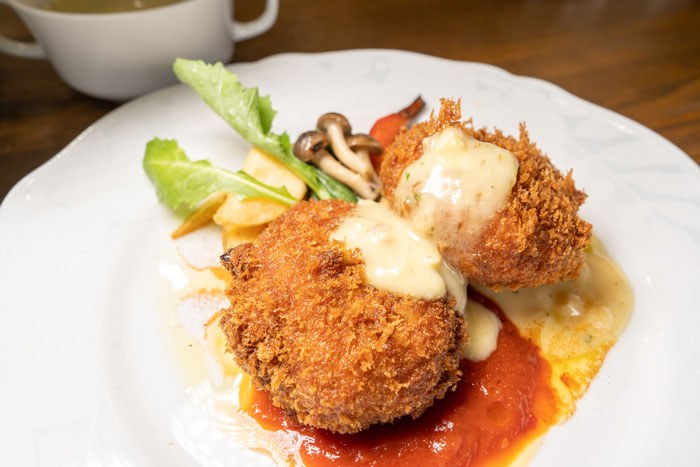
| 営業時間 | 11:30〜14:00／17:00〜20:30 |
|---|---|
| 定休日 | 火曜・第2月曜（臨時休業あり） |
| 住所 | 京都府宇治市宇治宇文字2-33 |
| 予約 | 可 — ☎ 0774-24-9991 |
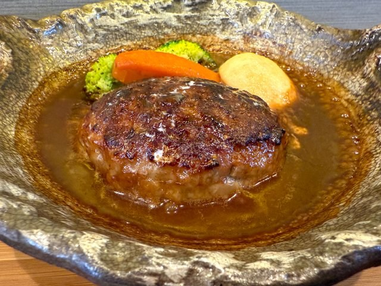
| 営業時間 | 11:00〜14:00（ディナー休業中） |
|---|---|
| 定休日 | 不定休 |
| 住所 | 京都府宇治市五ヶ庄新開14-63 コート黄檗1F |
| 予約 | 不可 — ☎ 0774-33-1040 |
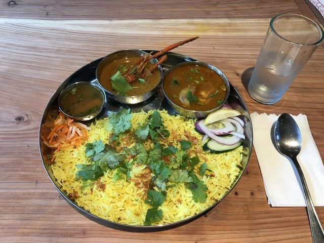
| 営業時間 | 11:00〜15:00（L.O.14:30・カレーがなくなり次第終了） |
|---|---|
| 定休日 | 日曜・月曜・火曜（営業は水〜土） |
| 住所 | 京都府宇治市五ケ庄西浦32-5 |
| 予約 | 不可 — ☎ 0774-66-4186 ／ 公式サイト |
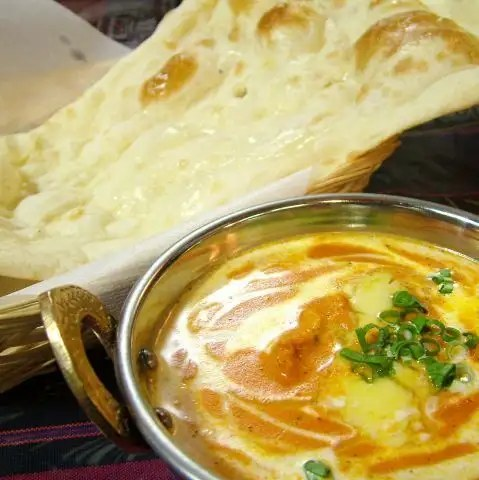
| 営業時間 | 11:00〜15:00（L.O.14:30）／17:00〜23:00（L.O.22:30） |
|---|---|
| 定休日 | 第1・第3火曜 |
| 住所 | 京都府宇治市広野町西浦101-2 |
| 予約 | 可 — ☎ 0774-45-0177 ／ 公式サイト |
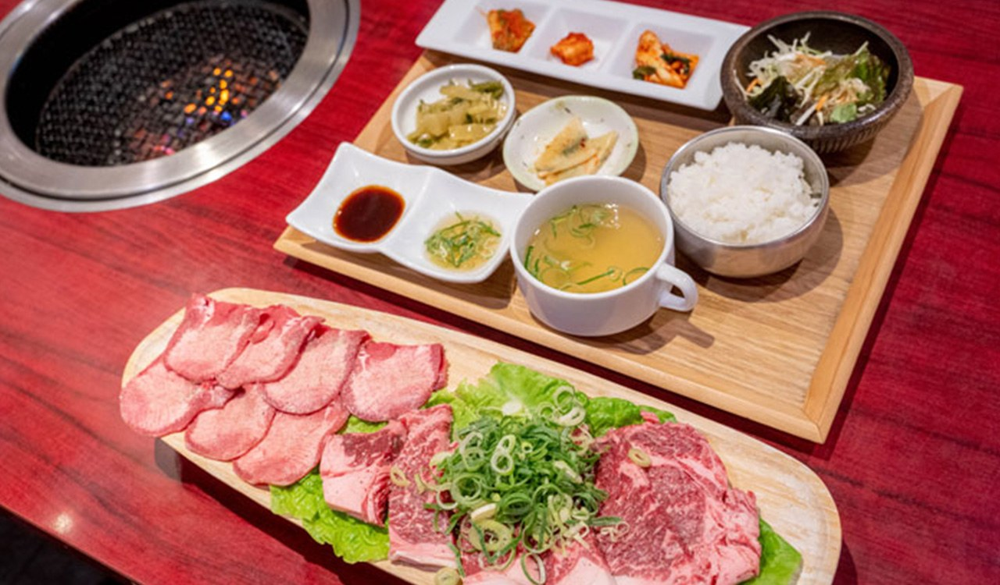
| 営業時間 | 11:30〜14:00／17:00〜22:00 |
|---|---|
| 定休日 | 無休 |
| 住所 | 京都府宇治市小倉町神楽田3-6 |
| 予約 | 推奨 — ☎ 0774-20-6442 ／ 公式サイト |
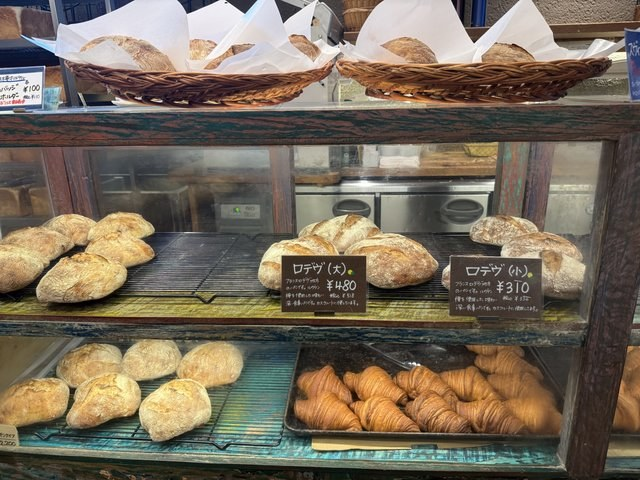
| 営業時間 | 8:00〜18:45 |
|---|---|
| 定休日 | 月曜・火曜・水曜 |
| 住所 | 京都府宇治市五ケ庄平野57-14 |
| 予約 | 不可 — 公式サイト |
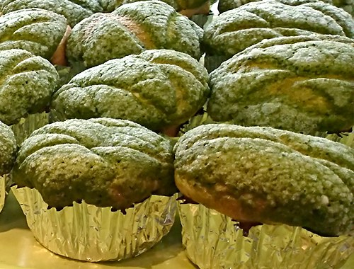
| 営業時間 | 6:00〜18:00 |
|---|---|
| 定休日 | 月曜、第1・第2火曜 |
| 住所 | 京都府宇治市宇治妙楽26-1 |
| 予約 | 不要 — ☎ 0774-24-1267 ／ 公式サイト |
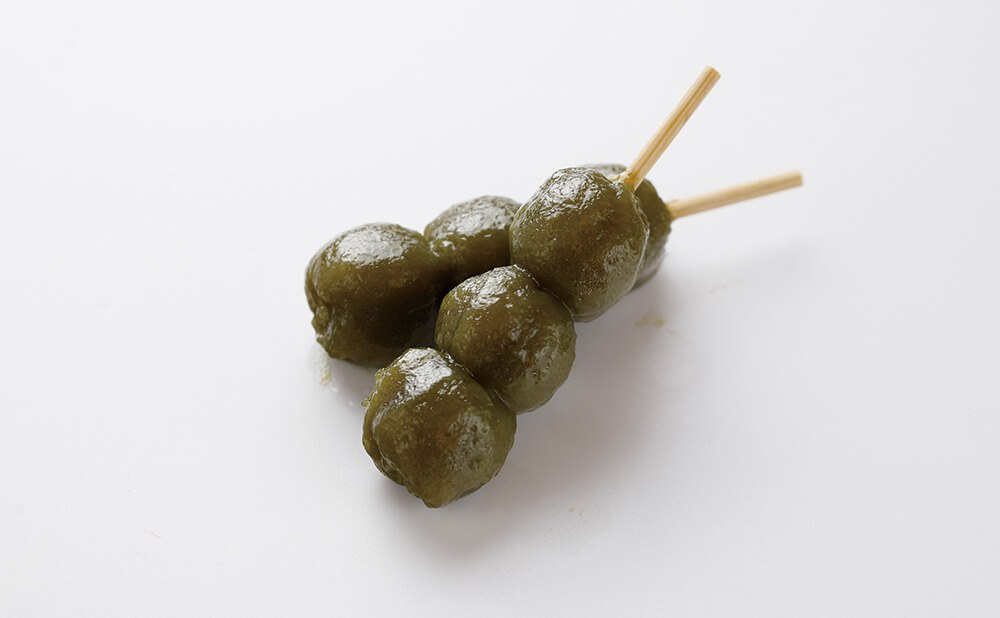
| 営業時間 | 9:00〜18:00 |
|---|---|
| 定休日 | 月曜・火曜 |
| 住所 | 京都府宇治市宇治妙楽160-13 |
| 予約 | 不要 — ☎ 0774-21-2377 ／ 公式サイト |
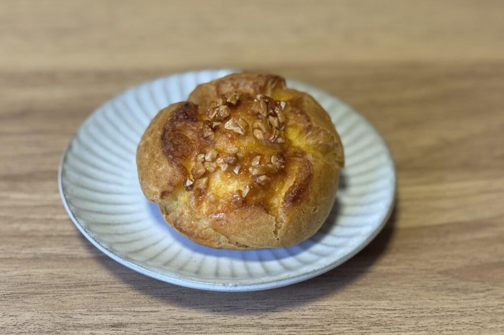
| 営業時間 | 11:00〜なくなり次第終了 |
|---|---|
| 定休日 | 水曜・木曜（不定休あり） |
| 住所 | 京都府宇治市五ヶ庄二番割39-1 |
| 予約 | 可（ホールケーキは要予約） — ☎ 0774-79-0082 ／ 公式サイト |
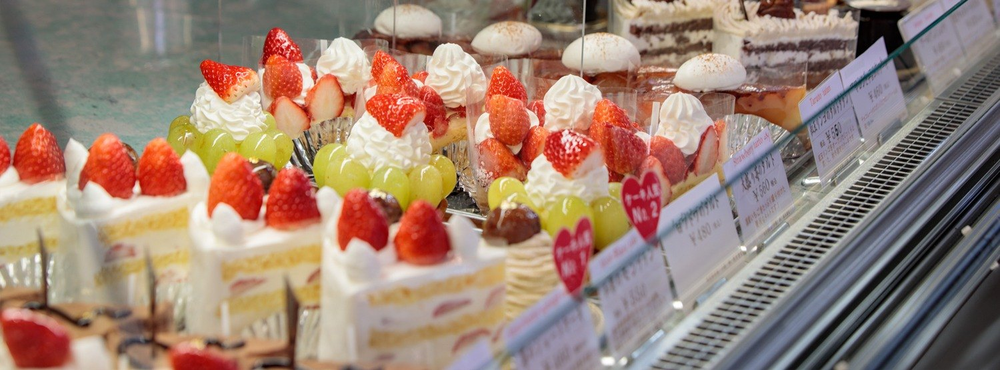
| 営業時間 | 平日11:00〜18:00／土日祝11:00〜18:30 |
|---|---|
| 定休日 | 火曜・第3水曜 |
| 住所 | 京都府宇治市宇治壱番70 |
| 予約 | 可（アニバーサリーケーキ・似顔絵ケーキは要予約） — ☎ 0774-66-1102 ／ 公式サイト |
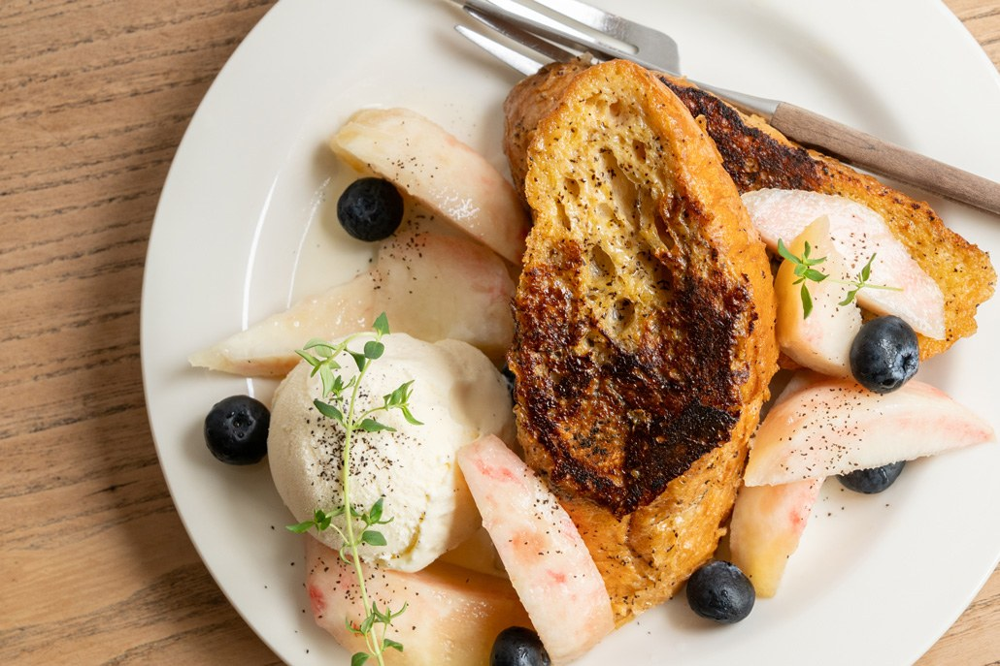
| 営業時間 | 10:00〜18:00（カフェL.O.17:30） |
|---|---|
| 定休日 | 火曜・水曜（不定休あり） |
| 住所 | 京都府宇治市木幡南山畑30-9 |
| 予約 | 不要 |
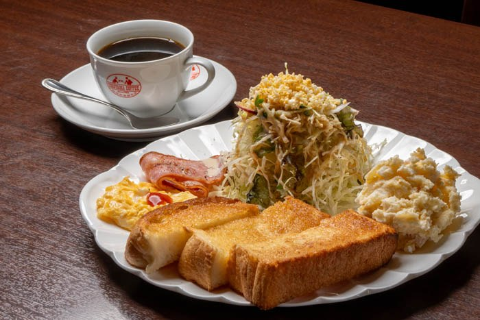
| 営業時間 | 7:00〜19:00（L.O.18:00／モーニングは11:00まで） |
|---|---|
| 定休日 | 月曜（盆・正月を除く） |
| 住所 | 京都府宇治市小倉町西浦5-9 |
| 予約 | 不要 — ☎ 0774-20-3239 ／ 公式サイト |
本ガイドは個人利用目的で作成。掲載情報は2026年9月時点の調査に基づく。写真出典: 各店の公式サイト・公式SNS、および地域情報サイト等の掲載写真（著作権は各サイト・各撮影者に帰属）。引用元は店ごとにカード内へ明記。